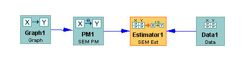

Inside the Estimate Box |
An Estimate box in the main workspace looks like this:

The Estimate program takes a parametrized model (in PM) and a data set
for the variables in that model, and returns an Instantiated Model,
an IM. It will also take
data and an (ML) IM as input.. Once a model is estimated, the contents
of
the Estimate box
can be transferred to an empty IM box and then used to generate
data, to classify, or to update (in the
last two cases, only if the model is a Bayes net, not a SEM).
If a Maximum Likelihood Bayes Net and data are directly connected to
Estimate, the estimation procedures will ignore all cases in the data
set with missing values for any variables. Missing data values
can be interpolated by connecing the data to a Manipulate Data box, and
connecting that box to the Estimator box.
There are several varieties of estimation, depending on
the.graphical input (the PM or IM):
1. If the input PM or IM is for a SEM, the Estimate program
immediately produces a full
information maximum likelihood estimate of the parameters, provided the
model in the PM or IM is identifiable. Latent variables are allowed.
The procedure also gives
model statistics, including
the implied covariance and correlation matrices, and the chi square
likelihood ratio statistic and its p value for the model.
2. If the input is a PM for a Bayes Net, the Estimate program
produces a maximum likelihood estimate of the model parameters,
provided the model has no latent variables..
3. If the input is an Maximum Likelihhod Instatiated Bayes Net (an IM),
the Estimate program produces a maximum likelihood estimate of the
model parameters.
4. If the input is a Dirichlet
Instantiated Bayes Model, the Dirichlet Bayes estimator estimates
a posterior Dirichlet Bayes
instantiated model given a prior Dirichlet Bayes instantiated model and
a a discrete data set. The data set must contain all of the same
variables as the prior instantiated model.
Latent variables are not allowed.
The Dirichlet estimation algorithm is simple. First, a new (blank)
posterior
Dirichlet Bayes IM is created. Then, for each cell in the posterior,
the value (a) from the corresponding cell in the prior is retrieved,
and the number of cases in the data satisfying the condition of that
cell (n) is counted. The value of the cell in the posterior is set to a
+ n. Estimated conditional probabilities total pseudocount in each row
are calculated from these cell values.
As a shortcut, it is possible in the interface to use a Bayes PM and a
discrete data set as parents to the Dirichlet Bayes Estimator. If you
do this, a symmetric Dirichlet Bayes IM will be generated in the
background and used as the prior for the Dirichlet estimation
algorithm. The symmetric pseudocount that should be used here may be
specified at time of construction.
In its present implementation, Bayes
nets with
latent variables cannot be estimated.
Types of estimators: